Arthas是一款线上监控诊断产品,通过全局视角实时查看应用load、内存、gc、线程的状态信息,并能在不修改应用代码的情况下,对业务问题进行诊断,包括查看方法调用的出入参、异常,监测方法执行耗时,类加载信息等,大大提升线上问题排查效率.
https://github.com/alibaba/arthas
测试代码
1
2
3
4
5
6
7
8
9
10
11
12
13
14
15
16
17
18
19
20
21
22
23
24
25
26
27
28
29
30
31
32
33
34
35
36
37
38
39
40
41
42
43
44
45
46
47
48
49
50
51
52
53
54
55
56
57
58
59
package demo ;
import java.util.ArrayList ;
import java.util.List ;
import java.util.Random ;
import java.util.concurrent.TimeUnit ;
public class MathGame {
private static Random random = new Random ();
public int illegalArgumentCount = 0 ;
public static void main ( String [] args ) throws InterruptedException {
MathGame game = new MathGame ();
while ( true ) {
game . run ();
TimeUnit . SECONDS . sleep ( 1 );
}
}
public void run () throws InterruptedException {
try {
int number = random . nextInt () / 10000 ;
List < Integer > primeFactors = primeFactors ( number );
print ( number , primeFactors );
} catch ( Exception e ) {
System . out . println ( String . format ( "illegalArgumentCount:%3d, " , illegalArgumentCount ) + e . getMessage ());
}
}
public static void print ( int number , List < Integer > primeFactors ) {
StringBuffer sb = new StringBuffer ( number + "=" );
for ( int factor : primeFactors ) {
sb . append ( factor ). append ( '*' );
}
if ( sb . charAt ( sb . length () - 1 ) == '*' ) {
sb . deleteCharAt ( sb . length () - 1 );
}
System . out . println ( sb );
}
public List < Integer > primeFactors ( int number ) {
if ( number < 2 ) {
illegalArgumentCount ++ ;
throw new IllegalArgumentException ( "number is: " + number + ", need >= 2" );
}
List < Integer > result = new ArrayList < Integer > ();
int i = 2 ;
while ( i <= number ) {
if ( number % i == 0 ) {
result . add ( i );
number = number / i ;
i = 2 ;
} else {
i ++ ;
}
}
return result ;
}
}
附加进程
启动Demo
执行arthas-boot.jar进行附加
1
java -jar arthas-boot.jar
如果提示端口被占用,可以使用下述命令进行端口自定义.
1
java -jar arthas-boot.jar --telnet-port 9998 --http-port -1
如果附加成功,Arthas会在下述目录进行日志记录.
通过浏览器连接Arthas
Arthas目前支持Web Console,用户在attach成功之后,可以直接访问:http://127.0.0.1:3658/
默认情况下,Arthas只listen 127.0.0.1,所以如果想从远程连接,则可以使用–target-ip参数指定listen的IP
基础命令
基础命令
说明
base64
base64编码转换.同Linux base64
cat
打印文件内容.同Linux cat
cls
清空当前屏幕区域
echo
打印参数.同Linux echo
grep
匹配查找.同Linux grep
help
查看命令帮助信息
history
打印命令历史
keymap
显示所有的快捷键
pwd
显示当前的工作路径.同Linux pwd
quit
退出当前Arthas客户端,其他Arthas客户端不受影响
reset
重置增强类,将被Arthas增强过的类全部还原,Arthas服务端关闭时会重置所有增强过的类
session
查看当前会话信息
stop
关闭Arthas服务端,所有Arthas客户端全部退出
tee
复制标准输入到标准输出和指定的文件.同Linux tee
version
输出当前目标Java进程所加载的Arthas版本号
JVM命令
jvm相关命令
说明
dashboard
当前系统的实时数据面板
getstatic
查看类的静态属性
heapdump
dump java heap,类似jmap命令的heap dump功能
jvm
查看JVM信息
logger
查看和修改logger
mbean
查看Mbean信息
memory
查看JVM的内存信息
ognl
执行ognl表达式
perfcounter
查看当前JVM的Perf Counter信息
sysenv
查看JVM的环境变量
sysprop
查看和修改JVM系统属性
thread
查看当前JVM线程堆栈信息
vmoption
查看和修改JVM里诊断相关的option
vmtool
从jvm里查询对象,执行forceGc
Class/Classloader命令
类，类加载相关的命令
说明
sc
查看JVM已加载的类信息
sm
查看已加载类的方法信息
jad
反编译字节码为源代码
mc
内存编译器,内存编译.java文件为.class文件
redefine
加载外部的.class文件,redefine到JVM里
retransform
加载外部的.class文件,retransform到JVM里(推荐)
dump
dump已加载类的byte code到特定目录
classloader
获取类加载器信息
sc
查看JVM已加载的类信息,“Search-Class"的简写,这个命令能搜索出所有已经加载到JVM中的Class信息.
sc默认开启了子类匹配功能,也就是说所有当前类的子类也会被搜索出来,想要精确的匹配,可以执行下述命令.
1
options disable-sub-class true
参数说明如下:
参数名称
参数说明
class-pattern
类名表达式匹配,支持全限定名,如com.luohun.test.AAA,也支持com/luohun/test/AAA这样的格式
method-pattern
方法名表达式匹配
[d]
输出当前类的详细信息,包括这个类所加载的原始文件来源、类的声明、加载的ClassLoader等详细信息. 如果一个类被多个ClassLoader所加载,则会出现多次
[E]
开启正则表达式匹配，默认为通配符匹配
[f]
输出当前类的成员变量信息(需要配合参数-d一起使用)
示例命令如下:
1
2
3
4
5
//模糊搜索，demo包下所有的类
sc demo . *
//打印类的详细信息
sc - d demo . MathGame
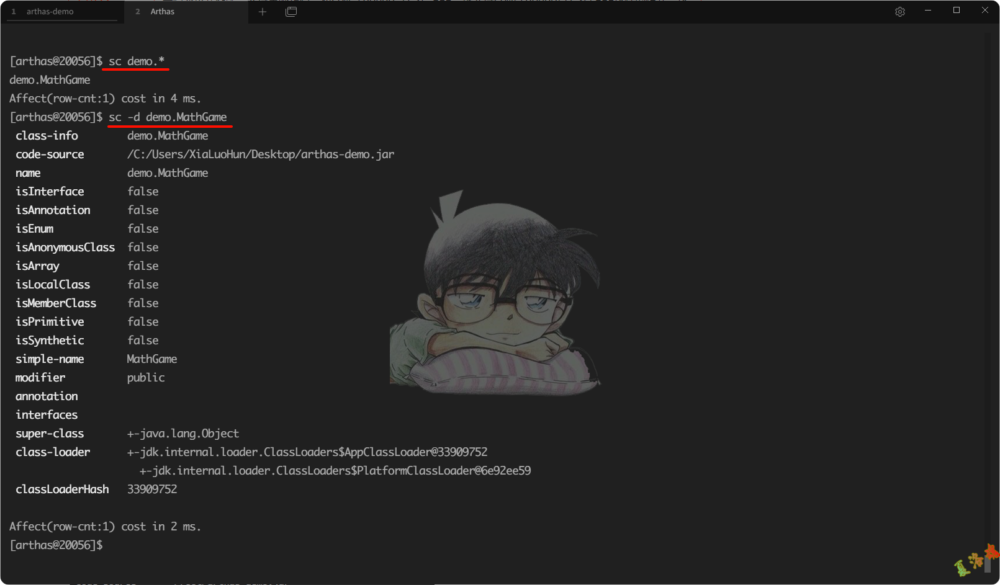
sm
查看已加载类的方法信息,“Search-Method"的简写,这个命令能搜索出所有已经加载了Class信息的方法信息.但是只能看到由当前类所声明(declaring)的方法,父类则无法看到.
参数说明如下:
参数名称
参数说明
class-pattern
类名表达式匹配
method-pattern
方法名表达式匹配
[d]
展示每个方法的详细信息
[E]
开启正则表达式匹配，默认为通配符匹配
示例命令如下:
1
2
3
4
5
//显示String类加载的方法
sm java . lang . String
//显示String中的toString方法详细信息
sm - d java . lang . String toString
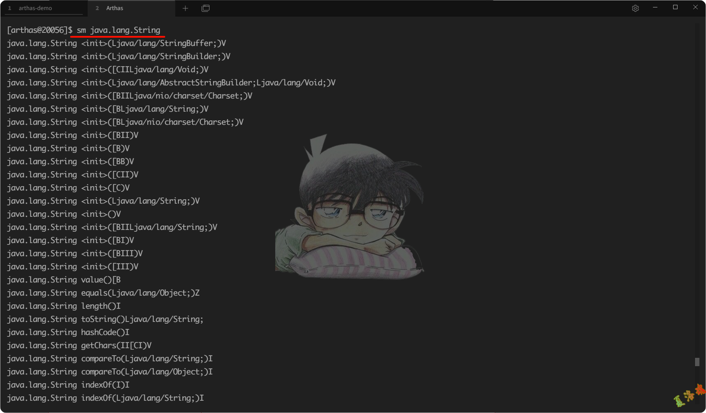
jad
反编译字节码为源代码.
参数说明如下:
参数名称
参数说明
class-pattern
类名表达式匹配
[E]
开启正则表达式匹配，默认为通配符匹配
示例命令如下:
1
2
3
4
5
6
7
8
//编译java.lang.String
jad java . lang . String
//反编绎时只显示源代码,默认情况下,反编译结果里会带有ClassLoader信息,通过--source-only选项,可以只打印源代码.方便和mc/redefine命令结合使用.
jad -- source - only demo . MathGame > C : / Users / XiaLuoHun / Desktop / jad / MathGame . java
//反编译指定的函数
jad demo . MathGame main
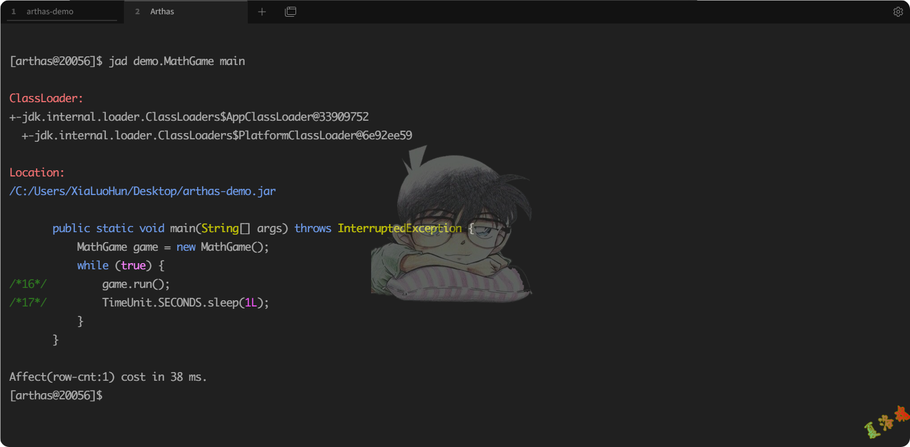
mc
Memory Compiler/内存编译器,编译.java文件生成.class
示例命令如下:
1
2
3
4
5
//在内存中编译Hello.java为Hello.class
mc C : / Users / XiaLuoHun / Desktop / jad / MathGame . java
//可以通过-d命令指定输出目录
mc - d C : / Users / XiaLuoHun / Desktop / jad C : / Users / XiaLuoHun / Desktop / jad / MathGame . java
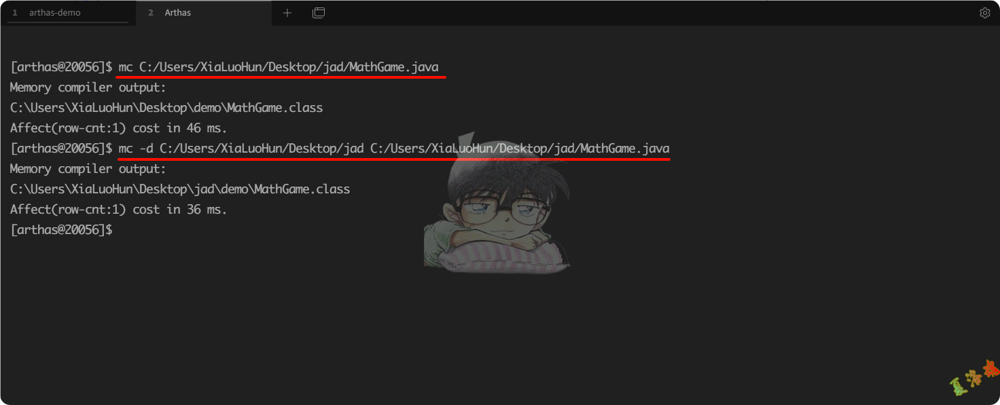
redefine
加载外部的.class文件,推荐使用retransform
示例命令如下:
1
2
//使用redefine命令加载新的字节码
redefine C : / Users / XiaLuoHun / Desktop / jad / demo / MathGame . class
redefine的限制如下:
不允许新增加field/method
正在跑的函数,没有退出不能生效,比如下面新增加的System.out.println,只有run()函数里的会生效
1
2
3
4
5
6
7
8
9
10
11
12
13
14
15
16
17
18
19
20
21
22
23
24
25
public class MathGame {
public static void main ( String [] args ) throws InterruptedException {
MathGame game = new MathGame ();
while ( true ) {
game . run ();
TimeUnit . SECONDS . sleep ( 1 );
// 这个不生效，因为代码一直跑在 while里
System . out . println ( "in loop" );
}
}
public void run () throws InterruptedException {
// 这个生效，因为run()函数每次都可以完整结束
System . out . println ( "call run()" );
try {
int number = random . nextInt ();
List < Integer > primeFactors = primeFactors ( number );
print ( number , primeFactors );
} catch ( Exception e ) {
System . out . println ( String . format ( "illegalArgumentCount:%3d, " , illegalArgumentCount ) + e . getMessage ());
}
}
}
redefine后的原来的类不能恢复,redefine有可能失败(比如增加了新的field)
reset命令对redefine的类无效.如果想重置,需要redefine原始的字节码
redefine命令和jad/watch/trace/monitor/tt等命令会冲突.执行完redefine之后,如果再执行上面提到的命令,则会把redefine的字节码重置
加载外部的.class文件
示例命令如下:
1
2
3
4
5
6
7
8
9
10
11
12
13
14
15
//加载指定的.class文件,然后解析出class name,再retransform jvm中已加载的对应的类
//每加载一个.class 文件,则会记录一个retransform entry
retransform C : / Users / XiaLuoHun / Desktop / jad / demo / MathGame . class
//查看retransform entry
retransform - l
//删除指定retransform entry
retransform - d 1
//删除所有retransform entry
retransform -- deleteAll
//显式触发 retransform
retransform -- classPattern demo . MathGame
若要消除retransform的影响需进行下述步骤:
删除这个类对应的retransform entry
重新触发retransform
retransform的限制如下:
不允许新增加field/method
正在跑的函数,没有退出不能生效,比如下面新增加的System.out.println,只有run()函数里的会生效
1
2
3
4
5
6
7
8
9
10
11
12
13
14
15
16
17
18
19
20
21
22
23
24
25
public class MathGame {
public static void main ( String [] args ) throws InterruptedException {
MathGame game = new MathGame ();
while ( true ) {
game . run ();
TimeUnit . SECONDS . sleep ( 1 );
// 这个不生效，因为代码一直跑在 while里
System . out . println ( "in loop" );
}
}
public void run () throws InterruptedException {
// 这个生效，因为run()函数每次都可以完整结束
System . out . println ( "call run()" );
try {
int number = random . nextInt ();
List < Integer > primeFactors = primeFactors ( number );
print ( number , primeFactors );
} catch ( Exception e ) {
System . out . println ( String . format ( "illegalArgumentCount:%3d, " , illegalArgumentCount ) + e . getMessage ());
}
}
}
dump
将已加载类的字节码文件保存到特定目录:%HOMEPATH%/logs/arthas/classdump
参数说明如下:
参数名称
参数说明
class-pattern
类名表达式匹配
[c:]
类所属ClassLoader的hashcode
[E]
开启正则表达式匹配,默认为通配符匹配
示例命令如下:
1
2
//把demo包下所有的类的字节码文件保存到~/logs/arthas/classdump/目录下
dump demo . *
classloader
获取类加载器的信息
参数说明如下:
参数名称
参数说明
[l]
按类加载实例进行统计
[t]
打印所有ClassLoader的继承树
[a]
列出所有ClassLoader加载的类,请谨慎使用
[c:]
ClassLoader的hashcode
[c: r:]
用ClassLoader去查找resource
[c: load:]
用ClassLoader去加载指定的类
示例命令如下:
1
2
3
4
5
6
7
8
9
10
11
12
13
14
15
16
17
//默认按类加载器的类型查看统计信息
classloader
//按类加载器的实例查看统计信息，可以看到类加载的hashCode
classloader - l
//查看ClassLoader的继承树
classloader - t
//通过类加载器的hash，查看此类加载器实际所在的位置
classloader - c 798f84d5
//使用ClassLoader去查找类的class文件所在的位置
classloader - c 798f84d5 - r java / lang / String . class
//使用ClassLoader去加载类
classloader - c 798f84d5 -- load java . lang . String
进阶命令
命令
说明
monitor
监控指定类中方法的执行情况
watch
观察到指定方法的调用情况
trace
对方法内部调用路径进行追踪,并输出方法路径上每个节点上耗时
stack
输出当前方法被调用的路径
tt
记录指定方法每次调用的入参和返回信息
options
全局开关
monitor
监控指定类中方法的执行情况
参数说明如下:
参数名称
参数说明
class-pattern
类名表达式匹配
method-pattern
方法名表达式匹配
[E]
开启正则表达式匹配,默认为通配符匹配
[c:]
统计周期,默认值为120秒
示例命令如下:
1
2
//过5秒监控一次，类demo.MathGame中primeFactors方法
monitor - c 5 demo . MathGame primeFactors
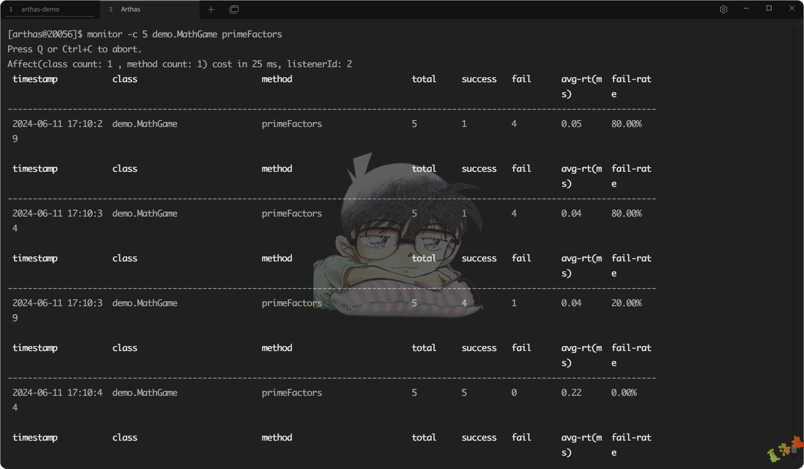
监控项说明如下:
监控项
说明
timestamp
时间戳
class
Java类
method
方法(构造方法、普通方法)
total
调用次数
success
成功次数
fail
失败次数
rt
平均耗时
fail-rate
失败率
watch
观察指定方法的调用情况
参数说明如下:
参数名称
参数说明
class-pattern
类名表达式匹配
method-pattern
方法名表达式匹配
express
观察表达式
condition-express
条件表达式
[b]
在方法调用之前 观察before
[e]
在方法异常之后 观察exception
[s]
在方法返回之后 观察success
[f]
在方法结束之后 (正常返回和异常返回)观察finish
[E]
开启正则表达式匹配,默认为通配符匹配
[x:]
指定输出结果的属性遍历深度,默认为1
watch 命令定义了4个观察事件点,即-b方法调用前,-e方法异常后,-s 方法返回后,-f方法结束后
4个观察事件点-b、-e、-s默认关闭,-f 默认打开,当指定观察点被打开后,在相应事件点会对观察表达式进行求值并输出
这里要注意方法入参和方法出参的区别,有可能在中间被修改导致前后不一致,除了-b事件点params代表方法入参外,其余事件都代表方法出参
当使用-b时,由于观察事件点是在方法调用前,此时返回值或异常均不存在
示例命令如下:
1
2
3
//观察demo.MathGame类中primeFactors方法出参和返回值,结果属性遍历深度为2
//params表示所有参数数组(因为不确定是几个参数)，returnObject表示返回值
watch demo . MathGame primeFactors "{params,returnObj}" - x 2
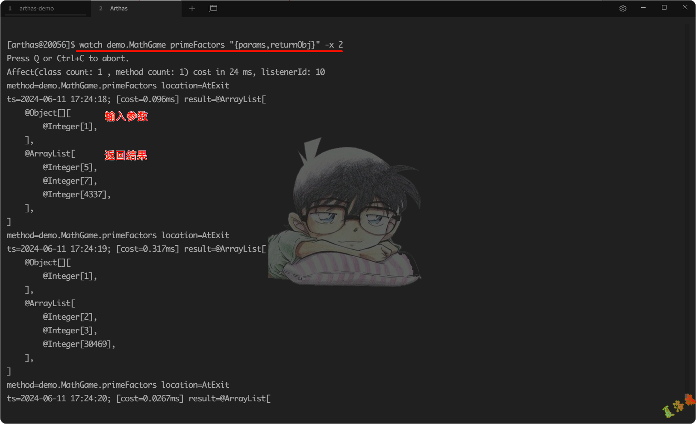
1
2
//观察方法入参,对比前一个例子,返回值为空(事件点为方法执行前,因此获取不到返回值)
watch demo . MathGame primeFactors "{params,returnObj}" - x 2 - b
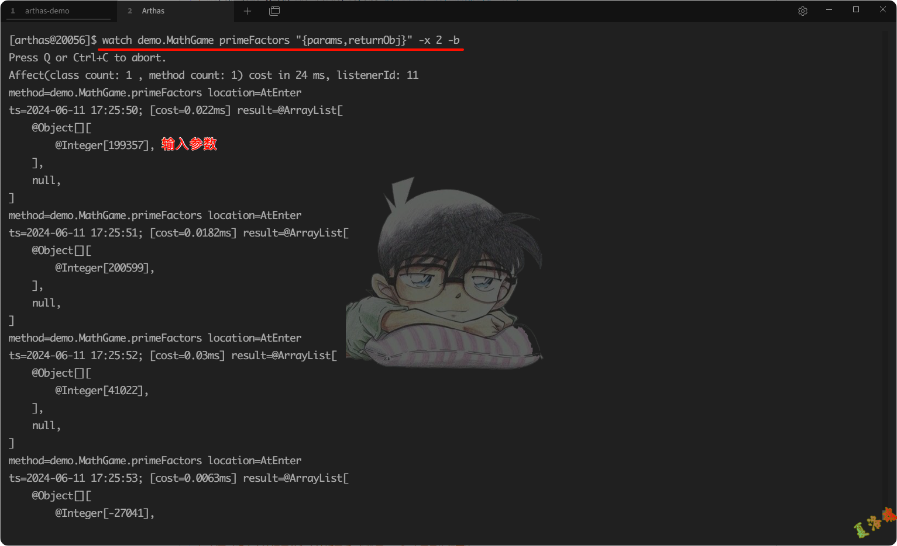
1
2
3
4
//同时观察方法调用前和方法返回后,参数里-n 2,表示只执行两次
//这里输出结果中,第一次输出的是方法调用前的观察表达式的结果,第二次输出的是方法返回后的表达式的结果
//params表示参数,target表示执行方法的对象,returnObject表示返回值
watch demo . MathGame primeFactors "{params,target,returnObj}" - x 2 - b - s - n 2
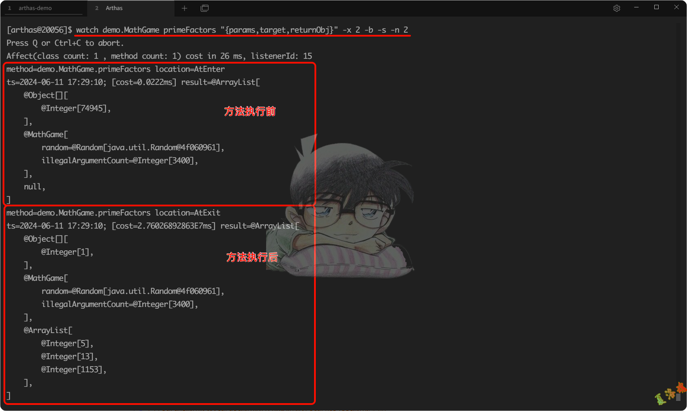
1
2
//条件表达式的例子，输出第1参数小于的情况
watch demo . MathGame primeFactors "{params[0],target}" "params[0]<0"
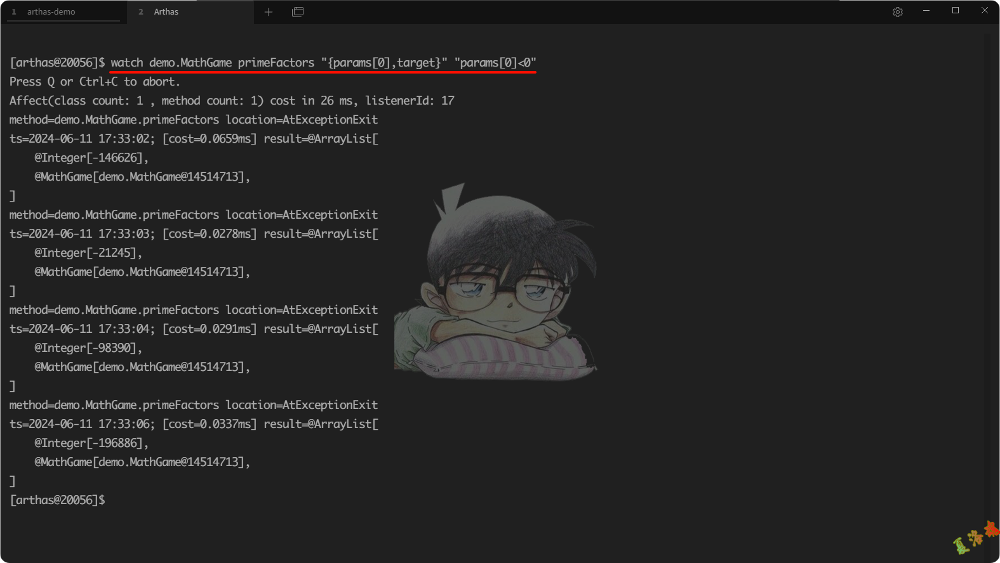
trace
对方法内部调用路径进行追踪,并输出方法路径上的每个节点上耗时
参数说明如下:
参数名称
参数说明
class-pattern
类名表达匹配
method-pattern
方法名表达式匹配
condition-express
条件表达式,使用OGNL表达式
[E]
开启正则表达式匹配,默认是通配符匹配
[n:]
设置命令执行次数
#cost
方法执行耗时,单位是毫秒
示例命令如下:
1
2
//trace函数指定类的指定方法
trace demo . MathGame run
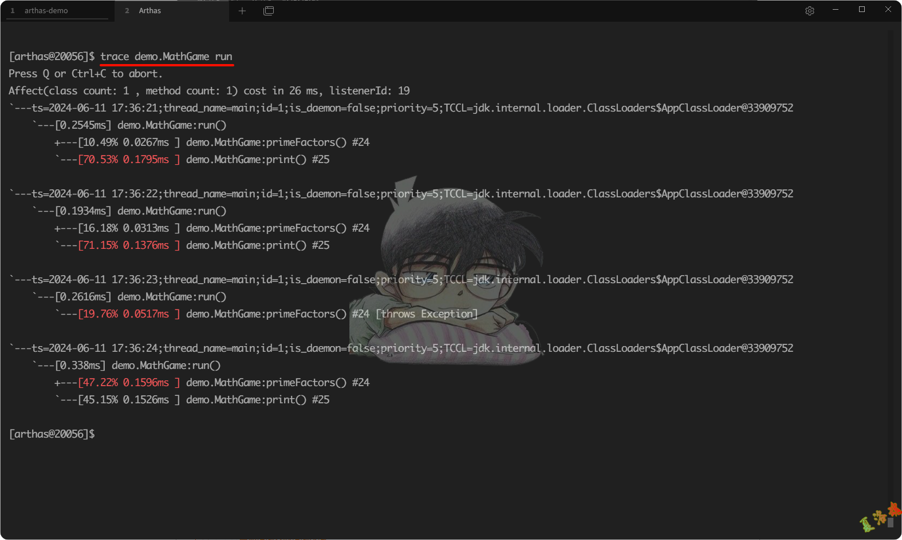
1
2
//如果方法调用的次数很多,那么可以用-n参数指定捕捉结果的次数.比如下面的例子里,捕捉到一次调用就退出命令
trace demo . MathGame run - n 1
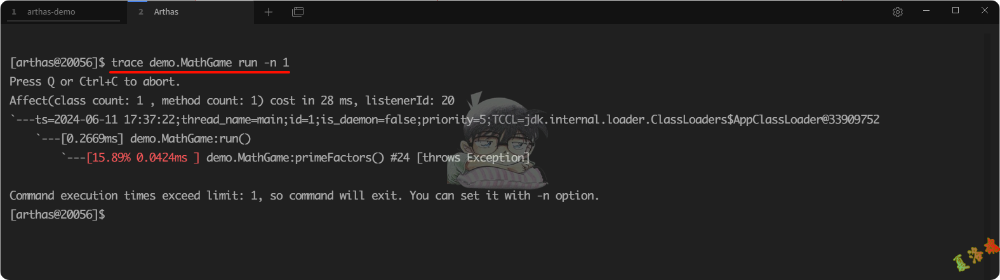
1
2
//默认情况下,trace不会包含jdk里的函数调用,如果希望trace jdk里的函数,需要显式设置--skipJDKMethod false
trace -- skipJDKMethod false demo . MathGame run
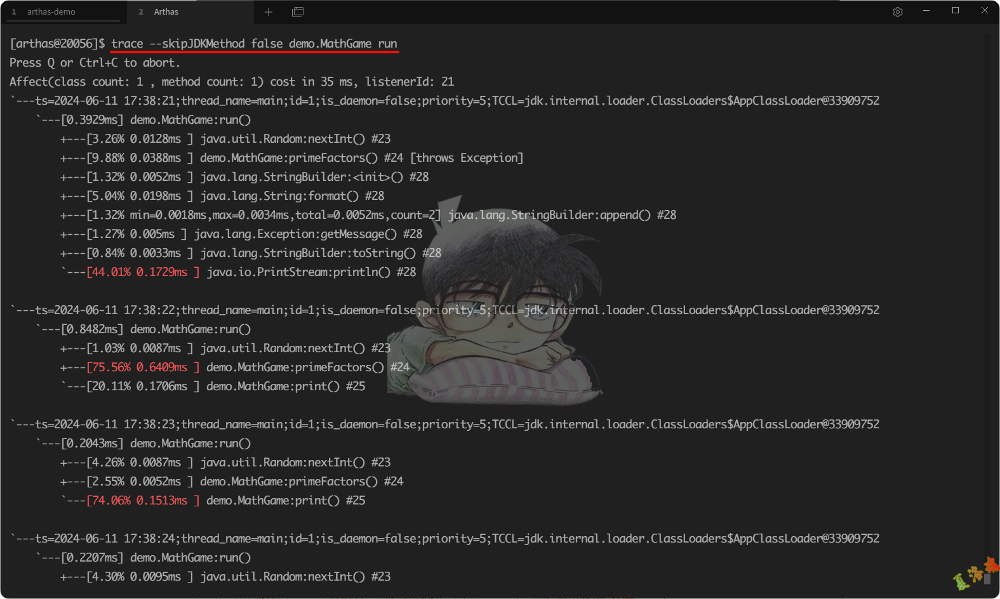
stack
输出当前方法被调用的调用路径
参数说明如下:
参数名称
参数说明
class-pattern
类名表达式匹配
method-pattern
方法名表达式匹配
condition-express
条件表达式,OGNL
[E]
开启正则表达式匹配,默认为通配符匹配
[n:]
执行次数限制
示例命令如下:
1
2
//获取primeFactors的调用路径
stack demo . MathGame primeFactors
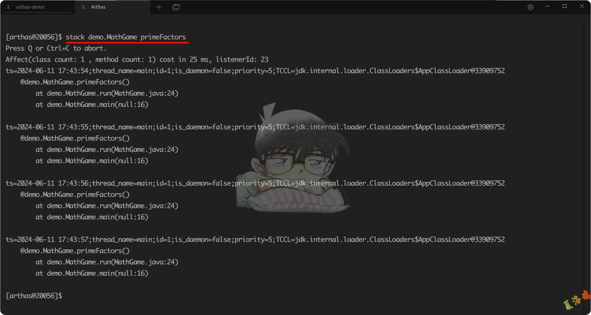
1
2
//条件表达式来过滤，第0个参数的值小于0，-n表示获取2次
stack demo . MathGame primeFactors ' params [ 0 ]< 0 ' - n 2
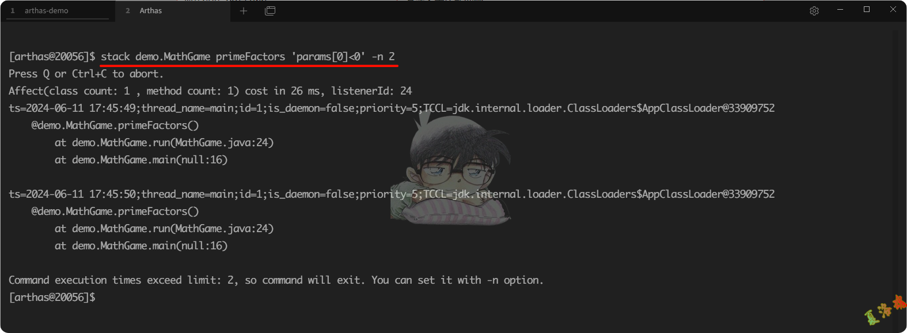
tt
记录下指定方法每次调用的入参和返回信息,并能对这些不同时间下调用的信息进行观测
参数说明如下:
参数名称
说明
-t
记录某个方法在一个时间段中的调用
-l
显示所有已经记录的列表
-n 次数
只记录多少次
-s 表达式
搜索表达式
-i 索引号
查看指定索引号的详细调用信息
-p
重新调用指定的索引号时间碎片
示例命令如下:
1
2
3
4
5
6
7
8
9
10
11
12
13
14
15
16
17
//记录下当前方法的每次调用环境现场。
tt - t demo . MathGame primeFactors
//检索调用记录
tt - l
//筛选出primeFactors方法的调用信息
tt - s ' method . name == "primeFactors" '
//查看调用信息
//-i 参数后边跟着对应的INDEX编号查看到详细信息
tt - i 1002
//重做一次调用
//tt命令由于保存了当时调用的所有现场信息,所以我们可以自己主动对一个INDEX编号的时间片自主发起一次调用,从而解放你的沟通成本
//可以通过--replay-times指定调用次数,通过 `--replay-interval` 指定多次调用间隔(单位ms, 默认1000ms)
tt - i 1002 - p
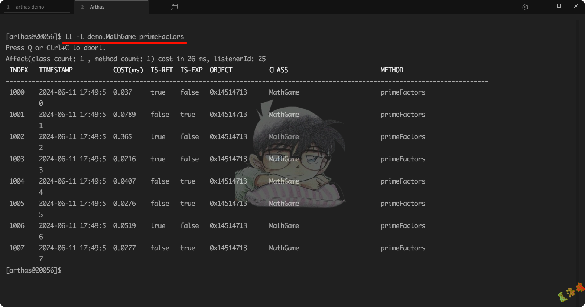
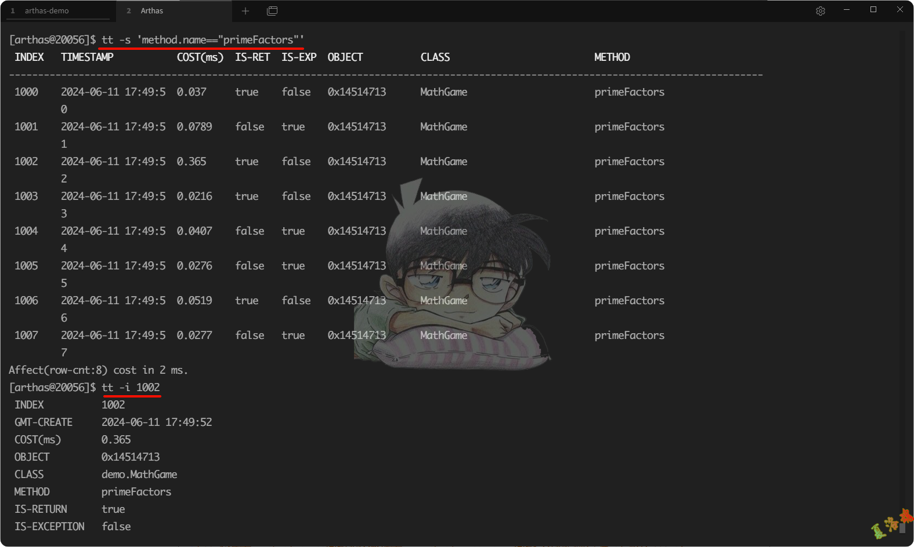
表格字段说明如下:
表格字段
字段解释
INDEX
时间片段记录编号,每一个编号代表着一次调用,后续tt还有很多命令都是基于此编号指定记录操作,非常重要
TIMESTAMP
方法执行的本机时间,记录了这个时间片段所发生的本机时间
COST(ms)
方法执行的耗时
IS-RET
方法是否以正常返回的形式结束
IS-EXP
方法是否以抛异常的形式结束
OBJECT
执行对象的hashCode(),注意,曾经有人误认为是对象在JVM中的内存地址,但很遗憾他不是.但他能帮助你简单的标记当前执行方法的类实体
CLASS
执行的类名
METHOD
执行的方法名
options
全局开关
全局选项如下:
名称
默认值
描述
unsafe
false
是否支持对系统级别的类进行增强,打开该开关可能导致把JVM搞挂,请慎重选择!
dump
false
是否支持被增强了的类dump到外部文件中,如果打开开关,class文件会被dump到/${application dir}/arthas-class-dump/目录下,具体位置详见控制台输出
batch-re-transform
true
是否支持批量对匹配到的类执行retransform操作
json-format
false
是否支持json化的输出
disable-sub-class
false
是否禁用子类匹配,默认在匹配目标类的时候会默认匹配到其子类,如果想精确匹配,可以关闭此开关
debug-for-asm
false
打印ASM相关的调试信息
save-result
false
是否打开执行结果存日志功能,打开之后所有命令的运行结果都将保存到~/logs/arthas-cache/result.log中
job-timeout
1d
异步后台任务的默认超时时间,超过这个时间,任务自动停止;比如设置 1d, 2h, 3m, 25s,分别代表天、小时、分、秒
print-parent-fields
true
是否打印在parent class里的filed
示例命令如下:
1
2
3
4
5
6
7
8
//查看所有的options
options
//获取option的值
options json - format
//设置指定的option
options save - result true
参考链接
Arthas帮助文档